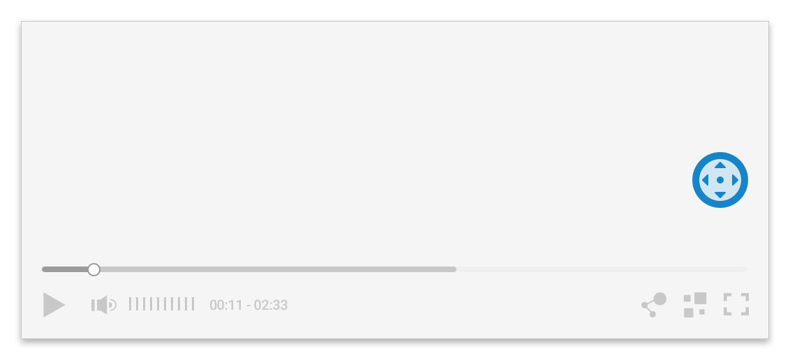
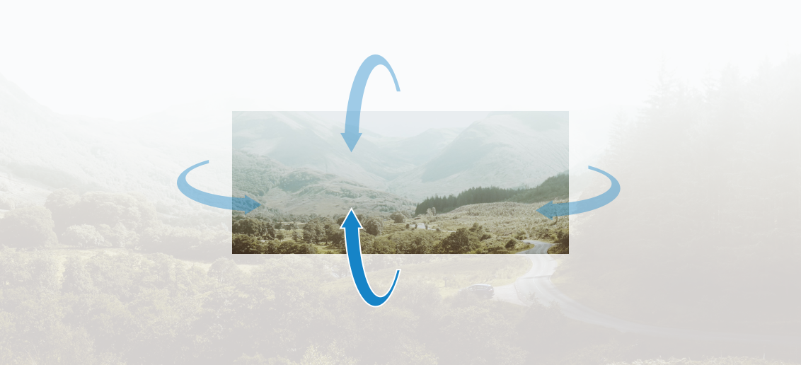
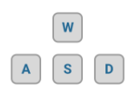
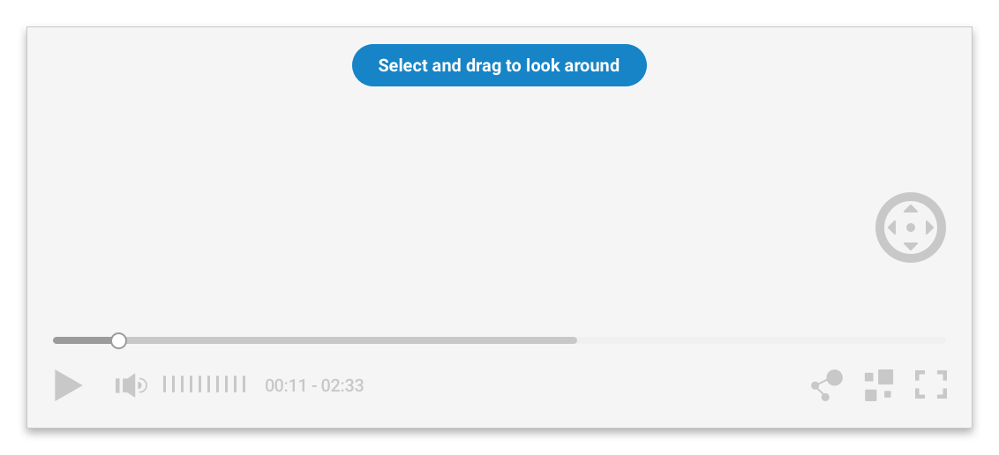
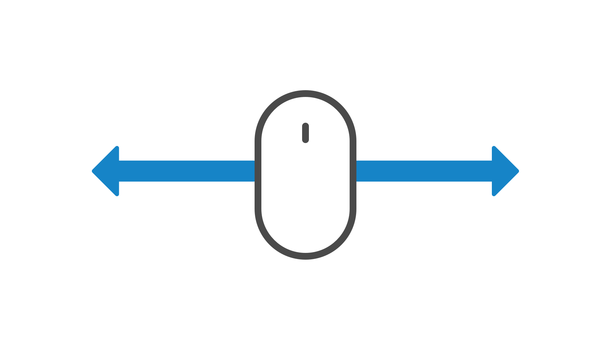
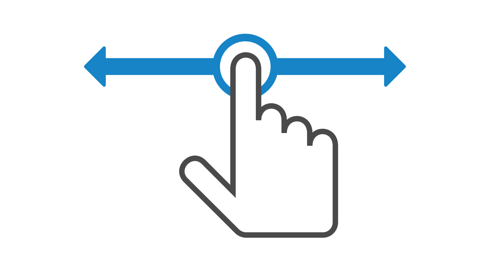
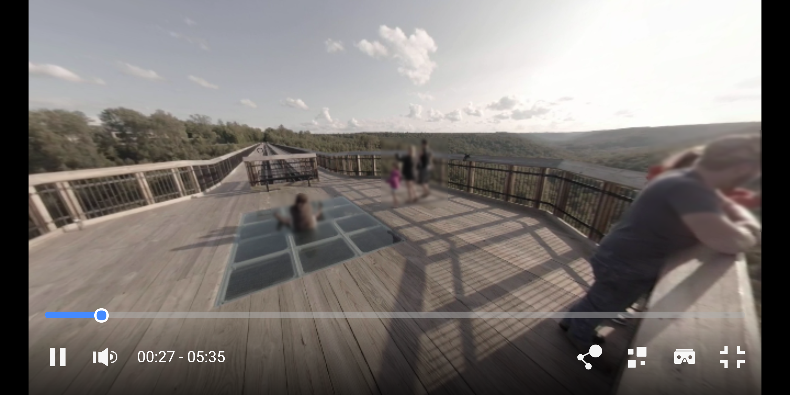
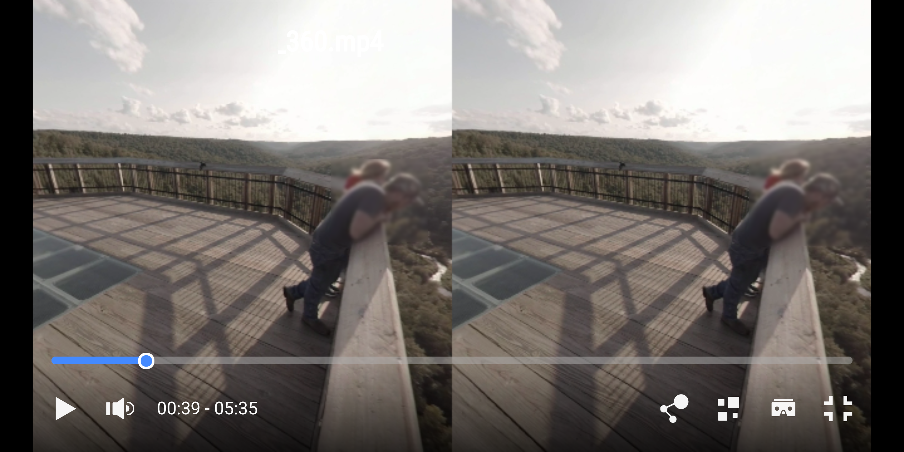

Ooyala allows you to store, publish, and play Virtual Reality (VR)
360-degree videos for consumers wanting an immersive VR experience on mobile and desktop
devices. Unlike traditional flat videos, VR 360 videos are created with special,
omni-directional cameras that capture views in all directions, resulting in a "spherical"
recording for VR interaction.
Considerations for VR 360 Videos
When working with VR 360 videos,
consider the following factors:
- Source File Creation: VR 360 requires special cameras to record the VR 360 content. The scope of this document assumes knowledge of how to produce and edit VR 360 content for distribution on the web and in mobile apps.
VR 360 Streams require much more bandwidth than flat video content.
- Specialized Requirements: VR 360 requires both rendering and framing of the VR 360-formatted stream, as well as the ability to control the camera angle. Therefore, any VR 360 video will be rendered with an additional player control capability to navigate the camera angle. In the source editing of the video, the default (zero) camera angle will be defined.
- VR 360 Streams require more bandwidth than flat video content. Because the viewable area on a VR 360 stream is only a small portion of the entire stream (the viewable area is typically only 10-20% of the video frame), it requires a much higher quality stream to achieve acceptable quality in the focused area. As a result, the threshold for sufficient network bandwidth is much higher for VR 360 content. To enable playback with minimal buffering and/or stall risk, viewers should have roughly 1.2-1.5x the connection bandwidth relative to the lowest bitrate available.
Ooyala Support for VR360 Videos
| Factor |
Description |
| Supported Browsers |
For web environments, VR 360 playback is supported on all generally
supported browsers that are certified for support with the Ooyala V4 player (see
Supported Browsers and Operating Systems for Player V4).
- Chrome
- Firefox
- Edge
- Internet Explorer 11+
- Safari
- Safari Mobile
Note: Safari Mobile is not supported in full-screen mode.
Instead, Ooyala supports ‘pseudo’ full-screen, where the top and bottom panels
are still visible. Full-screen view is not possible because Apple does not
allow the layering of UI controls on top of their native player in full-screen
(which is required to facilitate navigation).
- Chrome Mobile
Browser considerations:
- VR 360 playback will work automatically if you use the Standard embed code
(see Configuring Player Embed Settings in Backlot). The
Advanced embed will also work as long as:
- the bit_wrapper.js plugin is included
- the version of all plugins are on the Ooyala player 4.21 or higher
- For Chrome and Safari Mobile, VR 360 video navigation supports both
touch-and-drag and accelerometer navigation (moving with the device).
- If you distribute VR 360 content to a browser that cannot support it, viewers
will see the content as a flat video (no ability to change the camera angle) or
encounter a message stating that their browser does not support that
content.
Important: Only the Ooyala Skin SDK can be used with VR 360 videos.
The default skin and custom skin cannot be used with the iOS or Android
SDKs.
|
| Supported Ooyala Web Player Versions |
- Player V4 Web v4.20.5 or higher
|
| Supported Ooyala SDK Versions |
|
| Supported Device Hardware |
While we are recommending at or near 4K video quality, many devices do not
have the processing resources needed to render h.264 4K video. Specifically, we have
found the following devices to struggle to play 4K video:
- iOS 6 and below devices
- Android 5.x and below devices
Note:
Certain devices that do not have a gyroscope sensor are not capable of
supporting VR360 video. The Player relies on the gyroscope sensor for generating
the right orientation playback.
|
| Supported Input Formats |
- Recommended: H.264, Apple ProRes
- Other supported formats: VR 360 video can use any video codec that is supported
by Ooyala and is suitable for VR 360 display.
For more information about VR 360, see
VR 360 Videos.
|
| Supported VR360 Types |
- monoscopic - one image is directed at both eyes
- stereoscopic (side-by-side) - two images are separately directed to each eye
|
| Supported Streaming Formats |
Currently,clear HLS and DASH, as well as eHLS streams, are supported
with VR 360. By default, Ooyala provides a single-bitrate processing profile for any
videos identified on upload as VR 360. This profile creates at minimum an ~8 Mbps
HLS and/or DASH stream with a 4K resolution of 3840p. Ooyala ingestion maintains the
source aspect ratio and calculates height dynamically, while the source frame rate
is also retained from the source file. For details, see Encoding Recommendations for Player V4. |
Adding VR 360 Content to Your Backlot Account
You can add VR360
content to Backlot in the following ways:
- Backlot UI
- Uploading a VR 360 video is similar to uploading a flat video. The
main difference is that you identify the video as VR 360 and then specify whether the
content is monoscopic or stereoscopic. See Uploading a Video for details.
- You can add a VR 360 video as a remote asset. See
Adding a Remote Asset in Backlot for details.
- You can replace a video asset with a VR 360 video. See
Replacing Content for details.
- Backlot API - Uploading a VR 360 video is similar to uploading a flat video. The
main difference is that you specify the vr360type attribute as a query
parameter to specify whether the content is monoscopic or stereoscopic. You can specify
the vr360type in the initial POST /v2/assets call, or
you can add it later using PUT /v2/assets/:embed/metadata. See Uploading VR 360 Content for details.
- Ooyala Ingestion Service (OIS) - Uploading a VR 360 video is similar to ingesting
a flat video, with the addition of metadata that is unique to VR 360 - label the file as
VR 360 and specify the VR 360 type (monoscopic or stereoscopic).
For an overview of OIS, see About Ingesting Content
Managing VR 360 Assets
Once stored in Backlot, you can manage and
publish VR 360 videos just as you do flat videos.
Playing VR 360 Videos
The Ooyala Player automatically
detects VR 360 streams and displays the applicable playback controls to navigate VR 360
videos. The following example shows the VR 360 icon on screen.

Changing the Camera Angle
Viewers have several ways in which to change the
camera angle.

Keyboard. Viewers can use the keyboard controls (WASD) to change the camera angle.

Mouse. Viewers can select and drag with a mouse to change the camera angle.


Mobile Devices. Viewers change the camera angle by touching and swiping.

Switching Between Monoscopic and Stereoscopic Modes
Use the following icon to
switch between monoscopic and stereoscopic modes.
Here is an example in monoscopic mode.

Here is an example in stereoscopic mode.

Ads and VR 360
You can use any of the Ooyala player ad plugins
with VR 360 monoscopic content, just as you would with flat videos. See
Ads in Player V4.
Discovery and VR 360
The Ooyala player fully supports
mixing flat and VR 360 videos in the discovery recommendations. During playback, the player
will adjust appropriately to the video format and reveal or hide the applicable UI and
navigational elements. See
Discovering Content in Player V4.
Playlists and VR 360
The Ooyala player fully supports
mixing flat and VR 360 videos in the same playlist. During playback, the player will adjust
appropriately to the video format and reveal or hide the applicable UI and navigational
elements. See
Using Playlists in Player V4.
Analytics and VR 360
Standard analytics events will be
reported the same as other videos for Ooyala IQ as well as third-party analytics plugins.
Reporting is automatic - no additional setup is required for VR 360 videos. The same metrics
are tracked for VR 360 videos and flat videos. For supported Analytics integrations, see
Analytics in Player V4.
VR 360 and Mobile SDK Development
The Ooyala Mobile SDKs
provide the ability to play VR 360 content. It supports usage with both touch navigation of
monoscopic VR 360 content, and with stereoscopic VR 360 content using head-mounted displays.
With native iOS and Android apps, the videos can be navigated using the built-in device
accelerometers to enable manipulating the camera angles with motion.
VR 360
Considerations for All Mobile SDKs
- Only the Ooyala Skin SDK can be used with VR 360 videos. The default skin and custom
skin cannot be used with the iOS or Android SDKs.
- When presenting stereoscopic content in iOS or Android apps, touch and drag navigation
is disabled. This is because navigation is assumed to be via the accelerometers in
combination with a head-mounted display.
- If you are presenting stereoscopic videos, it is not recommended that you mix them with
flat ads, as the user would be using a stereoscopic head-mounted device for viewing, and
the flat videos would not display properly.
Syndication and VR 360
If you syndicate a VR 360 video to Facebook or Youtube, the asset is treated like a regular
video, not a VR 360 video.
iOS and tvOS Requirements
To support VR content
in your iOS/tvOS app, you need to add the OoyalaVRSDK.framework or OoyalaVRTVSDK.framework as
part of your app project. Do
not include the OoyalaSDK.framework because they do not
work well together. You will have access to everything that the OoyalaSDK.framework provides
with the OoyalaVRSDK only. For sample apps:
- iOS:
- TVOS: For Apple TV, the TVoS sample app currently only presents the supported
basic playback and navigation of VR 360 monoscopic content, using the remote control to
navigate in a full-screen view.
Android Requirements
To support VR content in your Android app, you need to
add the OoyalaVRSDK.jar library as part of your app project. You should also include the
OoyalaSDK.jar because it is a dependency of the OoyalaVRSDK.jar library.
Note:
Certain devices that do not have a gyroscope sensor are not capable of supporting VR360
video. The Player relies on the gyroscope sensor for generating the right orientation
playback.
Amazon Fire SDK Sample Apps for VR 360
For Amazon Fire TV, the sample app
currently only presents the supported basic playback and navigation of VR 360 monoscopic
content using the remote control to navigate in full-screen view.